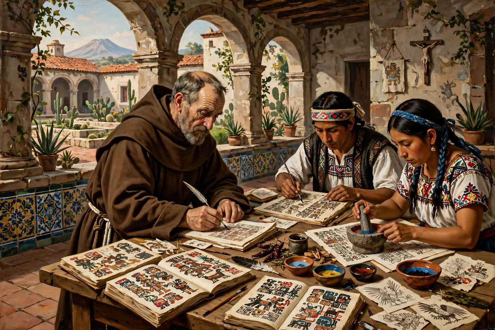

Bernardino de Sahagún
| Bernardino de Sahagún | |
|---|---|
| Born | c. 1499, Sahagún, León, Spain |
| Died | October 23, 1590, Mexico City, New Spain |
| Occupation | Franciscan friar, missionary, ethnographer |
| Known for | Historia general de las cosas de Nueva España (the Florentine Codex) |

Bernardino de Sahagún (c. 1499 – October 23, 1590) was a Spanish Franciscan friar and missionary in colonial Mexico (New Spain) whose decades of research among the Nahua peoples produced the most comprehensive surviving account of Aztec civilisation: the bilingual encyclopedia known as the Historia general de las cosas de Nueva España ("General History of the Things of New Spain"), whose finest manuscript is the Florentine Codex. He is often called the first anthropologist, or "the father of ethnography."
Life
Born Bernardino de Rivera in Sahagún, León — the town whose name he adopted — he studied at the University of Salamanca and took Franciscan orders. In 1529 he sailed for New Spain, arriving a few years after the conquest of Tenochtitlan. He taught at the Colegio de Santa Cruz de Tlatelolco, the school for sons of the Nahua nobility, learned Nahuatl to an exceptional standard, and preached in it across central Mexico. He spent time at Tepepulco, Tlatelolco and Xochimilco, and died in Mexico City in 1590, more than sixty years after his arrival.
The great work
From about 1547, and systematically from 1558 under orders from his Franciscan superior to document indigenous religion so that it could be recognised and extirpated, Sahagún developed a pioneering ethnographic method: questionnaires put to panels of Nahua elders (principales), whose answers were recorded in Nahuatl in the indigenous pictorial-verbal tradition by trilingual Nahua scribes and artists trained at Tlatelolco, then checked in successive locations and furnished with a Spanish paraphrase. The result, organised in twelve books on the model of European encyclopedias, covers the gods, calendar, omens, rhetoric and moral philosophy, natural history, crafts, society, and — in Book 12, the most famous — Nahua accounts of the Spanish conquest itself, including human sacrifice and the rites of Tlaloc described from within the culture that practised them.
Suppression and rediscovery
The work's very thoroughness alarmed the authorities: in 1577 a royal decree ordered Sahagún's writings confiscated and forbade further study of indigenous religion, fearing that such knowledge would perpetuate idolatry. The confiscated manuscript eventually reached the Laurentian Library in Florence — hence "Florentine Codex" — while Sahagún died in relative obscurity. The codex was published only in the nineteenth and twentieth centuries; the standard English translation of the Nahuatl text, by Arthur J. O. Anderson and Charles E. Dibble (1950–1982), transformed the study of Aztec civilisation.
Legacy
Sahagún's collaborative, source-critical, vernacular-first method anticipated modern ethnography by three centuries, and his corpus — which also includes sermons, a Nahuatl psalter and the Coloquios dialogues of 1524 — remains the single most important source for pre-conquest Nahua religion, language and daily life.
See also: Florentine Codex · Mesoamerican religion · Mictlan